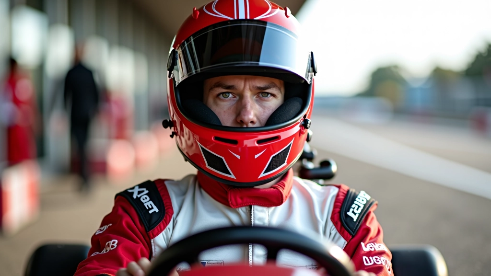

برنامج تدريبي
أساسيات تقنية الانطلاق
برنامج شامل يغطي المبادئ الأساسية للانطلاق الصحيح من خط البداية، مع شرح تفصيلي لمراحل التسارع والتحكم الأولي بالسيارة. مخصص للمتسابقين المبتدئين الراغبين في بناء أساس متين.
- وضعية القيادة الصحيحة
- التسارع المتدرج
- التحكم بعجلة القيادة